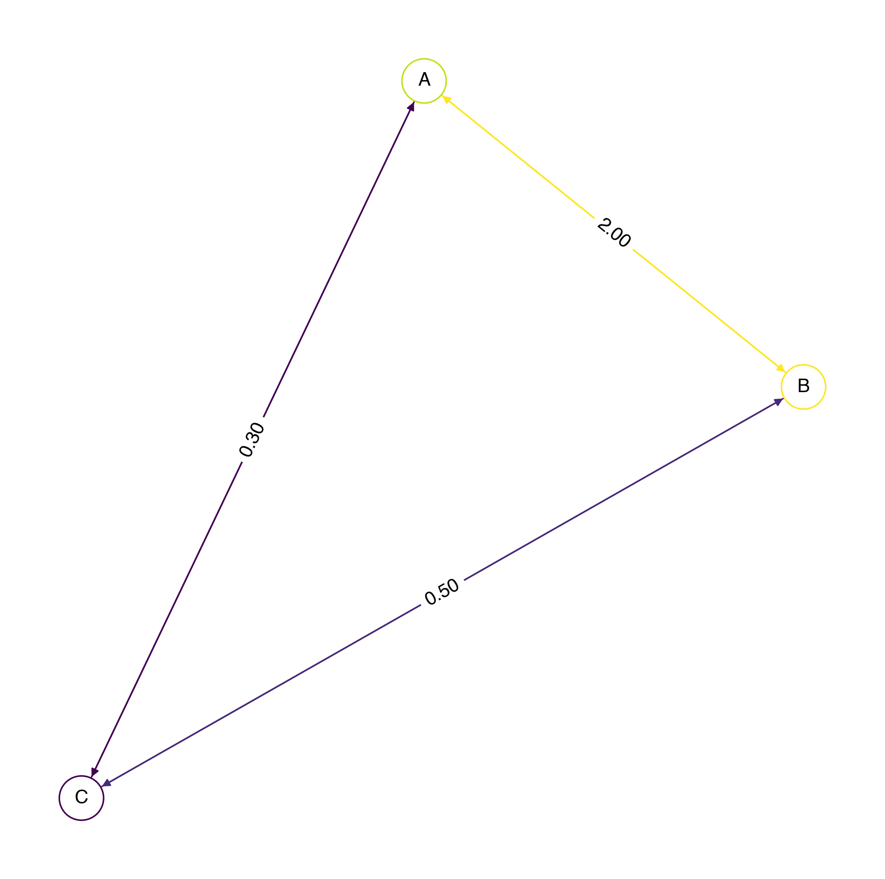
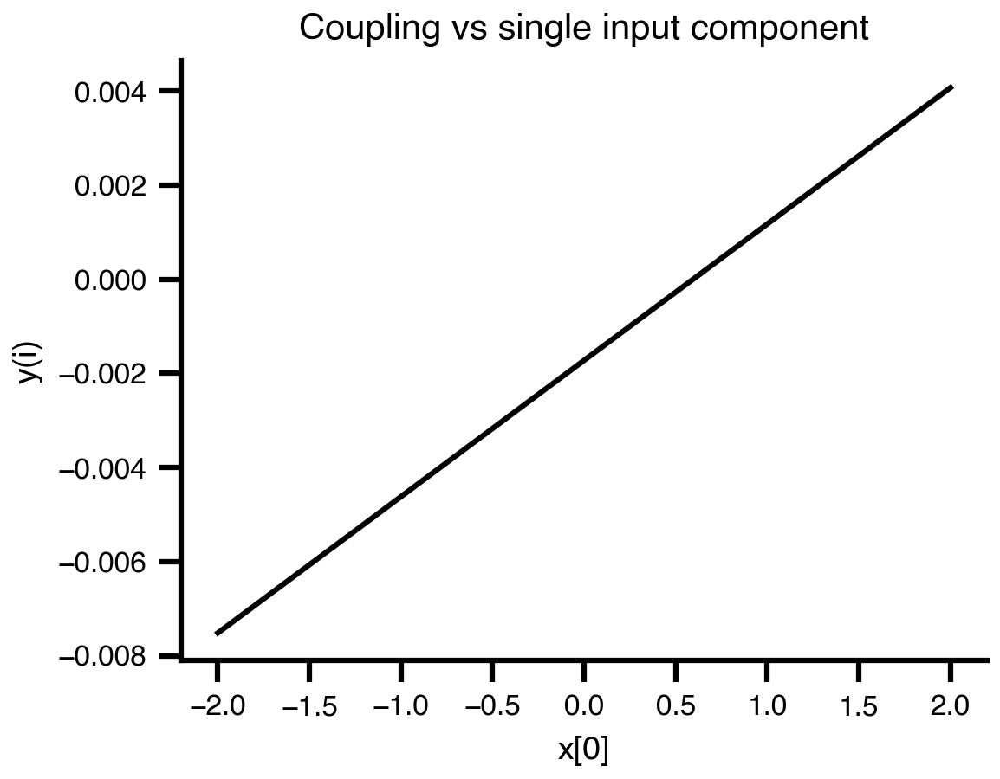
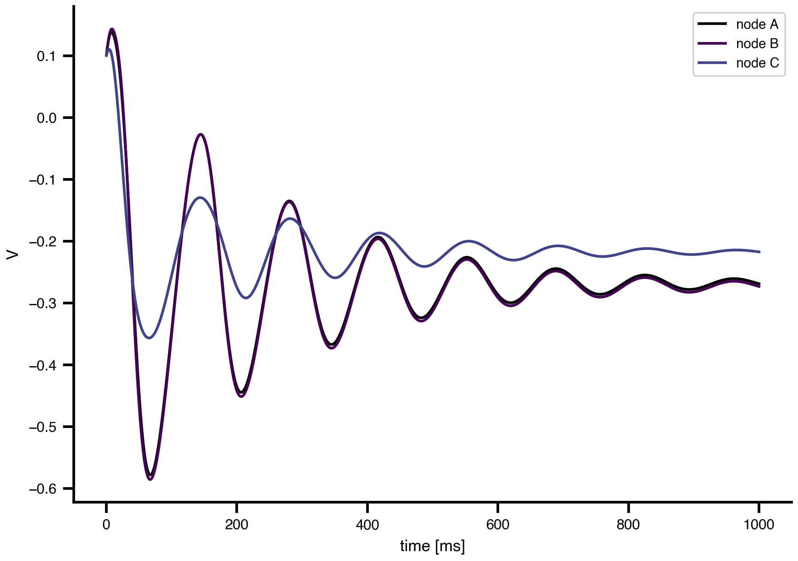
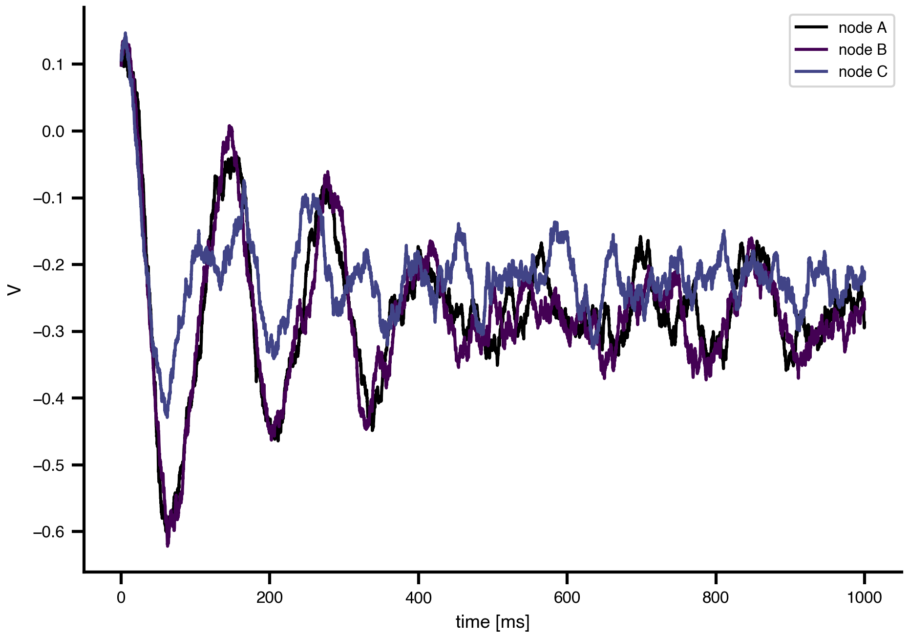

import bsplot
import matplotlib.pyplot as plt
from tvbo import Dynamics, Network, Noise, SimulationExperiment
bsplot.style.use("tvbo")Networks and Noise
1 From a single node to a brain network
Chapter 1 worked with a single dynamical system in isolation. The TVBO state equation has more structure than that:
\[ dS_i = \left[f_d(S_i, \theta^d, C_i, I_i)\right]dt + g(S_i, \theta^g)\,dW_i. \]
Two terms bring brains into the picture:
- Coupling \(C_i\) through a network of regions.
- Noise \(g(S_i, \theta^g)\,dW_i\) that turns the equation into an SDE.
This notebook introduces both with the native TVBO API and minimal code.
1.1 A toy network
Networks in TVBO are first-class metadata objects. A small connectome can be written inline as YAML; a real one is loaded from the database.
toy = Network.from_string("""
label: ToyChain
nodes:
- {id: 0, label: A}
- {id: 1, label: B}
- {id: 2, label: C}
edges:
- {source: 0, target: 1, parameters: {weight: {value: 2}, distance: {value: 30, unit: mm}}}
- {source: 1, target: 2, parameters: {weight: {value: 0.5}, distance: {value: 40, unit: mm}}}
- {source: 0, target: 2, parameters: {weight: {value: 0.3}, distance: {value: 60, unit: mm}}}
""")
toy.plot_graph()
The Desikan-Killiany connectome ships with TVBO and is loaded the same way:
sc = Network.from_db(rec="avgMatrix", atlas="DesikanKilliany")
print(sc.label, "—", sc.number_of_nodes, "regions")
sc.plot_overview()DesikanKilliany (avgMatrix SC+FC) — 84 regions
1.2 The Coupling Function
from tvbo import Coupling
C = Coupling.from_db('Linear')
CCoupling({
'name': 'Linear',
'parameters': {'b': Parameter({
'name': 'b',
'value': 0.0,
'description': ('Shifts the base of the connection strength while maintaining the absolute '
'difference between different values.')
}),
'a': Parameter({
'name': 'a',
'value': 0.00390625,
'description': 'Linear scaling factor of the coupled (delayed) input.'
})},
'sparse': False,
'pre_expression': Equation({'rhs': 'x_j', 'latex': False}),
'post_expression': Equation({'rhs': 'a*gx + b', 'latex': False}),
'delayed': True,
'symmetry': 'directed'
})C.equation\(\displaystyle b + a \sum_{j=0}^{-1 + N} {x}_{j} {g}_{i,j}\)
C.plot()
1.3 Simulating a coupled network
SimulationExperiment accepts a Dynamics, a Network, and a coupling kernel. We use the generic 2D oscillator coupled linearly across the toy connectome and run with the JAX-based tvboptim backend.
model = Dynamics.from_db("Generic2dOscillator")
toy.coupling['c_glob'] = C
C.parameters['a'].value=1.5
exp = SimulationExperiment(
dynamics=model,
network=toy,
)
exp.integration.duration = 1000 # ms
exp.integration.step_size = 0.1 # ms
exp.integration.method = "Heun"
result = exp.run("tvboptim")
result.integration.data
============================================================
STEP 1: Running simulation...
============================================================
Simulation period: 1000.0 ms, dt: 0.1 ms
Transient period: 0.0 ms
Simulation complete.
============================================================
Experiment complete.
============================================================<xarray.DataArray (time: 10000, variable: 2, node: 3)> Size: 480kB
array([[[ 0.10094234, 0.10100238, 0.10049208],
[ 0.09379672, 0.09379612, 0.09380122]],
[[ 0.10187335, 0.10199349, 0.10097233],
[ 0.08758712, 0.08758472, 0.08760511]],
[[ 0.10279301, 0.10297331, 0.10144073],
[ 0.08137144, 0.08136604, 0.08141191]],
...,
[[-0.26858695, -0.27299324, -0.21705416],
[ 0.65534673, 0.69881663, 0.16184414]],
[[-0.26861707, -0.27302391, -0.21706705],
[ 0.65540802, 0.69887911, 0.16186165]],
[[-0.26864716, -0.27305454, -0.21707993],
[ 0.65546979, 0.69894208, 0.16187938]]], shape=(10000, 2, 3))
Coordinates:
* time (time) float64 80kB 0.1 0.2 0.3 0.4 ... 999.7 999.8 999.9 1e+03
* variable (variable) <U1 8B 'V' 'W'
* node (node) <U1 12B 'A' 'B' 'C'The result is an xarray.DataArray with named axes. We select the first state variable and let TVBO plot all regions.
result.integration.sel(variable='V').plot()Fully declarative wiring can also be expressed with an explicit mapping layer: network-level coupling aliases are declared once, then each model coupling input points to its source.
import copy
model_decl = Dynamics.from_db("Generic2dOscillator")
toy_decl = copy.deepcopy(toy)
toy_decl.coupling["global_linear"] = Coupling.from_db("Linear")
model_decl.coupling_inputs["c_glob"].source = "global_linear"
exp_decl = SimulationExperiment(
dynamics=model_decl,
network=toy_decl,
)
exp_decl.integration.duration = 1000
exp_decl.integration.step_size = 0.1
exp_decl.integration.method = "Heun"
result_decl = exp_decl.run("tvboptim")
result_decl.integration.sel(variable='V').plot()
============================================================
STEP 1: Running simulation...
============================================================
Simulation period: 1000.0 ms, dt: 0.1 ms
Transient period: 0.0 ms
Simulation complete.
============================================================
Experiment complete.
============================================================
1.4 Adding noise
Noise enters the equation through the diffusion term \(g(S, \theta^g)\,dW\). TVBO exposes it as a metadata object that we attach to integration. Two flavours are built in.
1.4.1 Gaussian (white) noise
exp.integration.noise = Noise(
noise_type="gaussian",
parameters={"sigma": {"value": 0.01}},
)
result_white = exp.run("tvboptim")
result_white.integration.sel(variable='V').plot()
============================================================
STEP 1: Running simulation...
============================================================
Simulation period: 1000.0 ms, dt: 0.1 ms
Transient period: 0.0 ms
Simulation complete.
============================================================
Experiment complete.
============================================================
exp.integration.noise = Noise(
noise_type="gaussian",
parameters={"sigma": {"value": 0.01}},
)
result_white = exp.run("tvboptim")
result_white.integration.sel(variable='V').plot()
============================================================
STEP 1: Running simulation...
============================================================
Simulation period: 1000.0 ms, dt: 0.1 ms
Transient period: 0.0 ms
Simulation complete.
============================================================
Experiment complete.
============================================================
1.5 What we have so far
- A
Networkis metadata, just like aDynamics. SimulationExperiment(dynamics, network, coupling)is the canonical container.integration.noise = Noise(...)turns the deterministic ODE into an SDE.- The result is the same xarray-backed object as before, regardless of network size.
The next chapter takes this same experiment and starts to vary the parameters systematically.